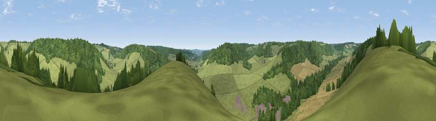

Viewpoint near Turville
#36887 in England · top 38% of its area beats it · near Turville · path 99 mWhere it is
The exact computed spot (SU 77025 91425). Click the marker for map links.
Public access: the nearest public right of way is about 99 m away — the final stretch may cross private land. Computed from Natural England's CRoW access layer and OpenStreetMap rights of way — not the legal definitive map. Always verify locally.
The view, rendered

A 360° render of this exact spot computed from the terrain model, tree cover and land cover — summer colours, afternoon light, calibrated against photographs of famous viewpoints. Real trees, hedges and buildings will differ in detail.
The panorama
Grey silhouette: terrain skyline in each direction (720 bearings, Earth curvature and refraction included). Dashed green: skyline with trees (+15 m) and buildings (+8 m) as obstacles. Blue strip: how far the ground is visible on each bearing.
Where the view opens
Wedge length = distance to the farthest visible ground on that bearing (vegetation-aware). Rings at 10, 25 and 50 km.
What fills the view
60% grassland · 30% woodland · 10% cropland ·
Angular shares of the visible panorama (visual magnitude), not map area. Landscape diversity 0.40 (0–1 Shannon).
Key numbers
More beautiful places nearby
The staircase of upgrades: each row has a higher view potential than everything closer. Driving times are estimates from straight-line distance, calibrated against real road routing — check an actual route before setting out.
| Place | Direction | Drive | Score |
|---|---|---|---|
| Viewpoint near Cadmore End | ENE · 2 km | ~5 min | 33.0 |
| Viewpoint near Turville | S · 2 km | ~6 min | 35.7 |
| Viewpoint near Fawley | SW · 4 km | ~10 min | 48.8 |
| Viewpoint near Watlington | WNW · 7 km | ~14 min | 67.1 |
| Viewpoint near Lewknor | NW · 7 km | ~14 min | 70.8 |
| Viewpoint near Lewknor | NW · 7 km | ~15 min | 74.4 |
| Coombe Hill Monument | NNE · 17 km | ~30 min | 75.5 |
| Beacon Hill | SW · 46 km | ~67 min | 76.7 |
51.61639, -0.88891 · source: screening · position refined by local search. Computed location — check access rights before visiting.